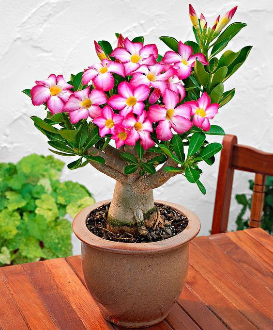

Rosa do Deserto
A rosa do deserto (Adenium obesum) é uma planta exótica e ornamental conhecida por seu caule grosso e inchado, que armazena água, e por suas flores vibrantes e chamativas. Nativa de regiões áridas da África e do Oriente Médio, essa planta é uma suculenta e pode variar em tamanho, desde pequenos arbustos até árvores de médio porte. Suas flores têm pétalas em forma de trompete e podem ser encontradas em tons de rosa, vermelho, branco, roxo e, às vezes, com combinações dessas cores.
A rosa do deserto se destaca por sua resistência ao calor e à seca, sendo ideal para climas quentes e com baixa umidade. Ela precisa de muito sol e solo bem drenado, e suas flores contrastam com o caule robusto e as folhas verde-escuras e brilhantes. É uma planta muito valorizada em jardins de cactos e suculentas, além de ser usada como bonsai devido à sua forma escultural.